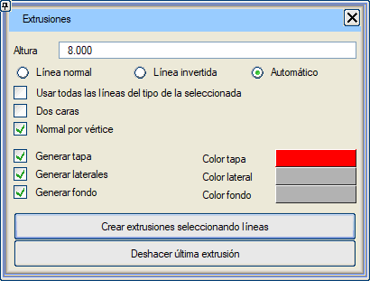
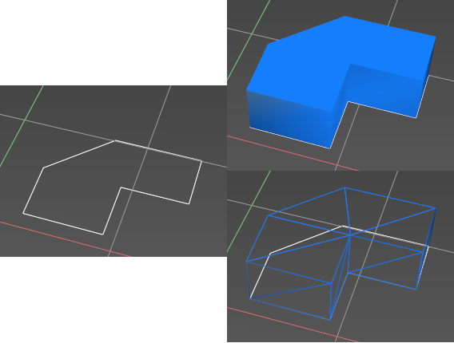

| |
|
Yükselterek Katı Model Oluşturma(Extrude)
|
|
Genel Bilgiler Buradan, haritadaki bir çizgiden yola çıkarak oluşturulan nesneler yükseltilebilir. Çizgi kullanılarak dikey "duvarlar" yükseltilir ve iki "kapak" (üst ve alt yüzey) eklenir; bu özellik, bina oluşturmak için oldukça kullanışlıdır.  Seçenekler Yükseklik: duvarların çizgiden itibaren olan yüksekliği. Normal Çizgi Yönü: geometriyi, çizgi boyunca dış tarafın sağda olduğu varsayılarak oluşturur. Ters Çizgi Yönü: geometriyi, çizgi boyunca dış tarafın solda olduğu varsayılarak oluşturur. Otomatik: geometriyi, programın çizginin dış tarafının nerede olduğuna karar vermesine izin vererek oluşturur. Seçilen tiple aynı olan tüm çizgileri kullan: eğer işaretliyse, bir tipe ait tüm çizgilerden yükseltilmiş katı modeller oluşturur. Çift Yüzeyli: eğer seçiliyse, sonuçta ortaya çıkan geometrinin hem dış hem de iç yüzeylerinin boyanacağını belirtir. Köşe Başına Normal: eğer işaretliyse, sonuçta ortaya çıkan geometrinin her bir köşe noktasında yüzeye dik normal vektörler hesaplayacağını belirtir; aksi takdirde her üçgen için bir normal vektör hesaplanır. Çizgileri Seçerek Yükseltme İşlemi Oluştur: seçtiğimiz her bir çizgi veya çizgi tipi için tanımlanan yükseklikte ilgili yükseltilmiş katı modelleri oluşturur. Son Yükseltme İşlemini Geri Al: gerçekleştirilen son yükseltme işleminin geometrisini siler.  Haritadaki bir çizgiden yükseltilerek oluşturulmuş katı model örneği. |